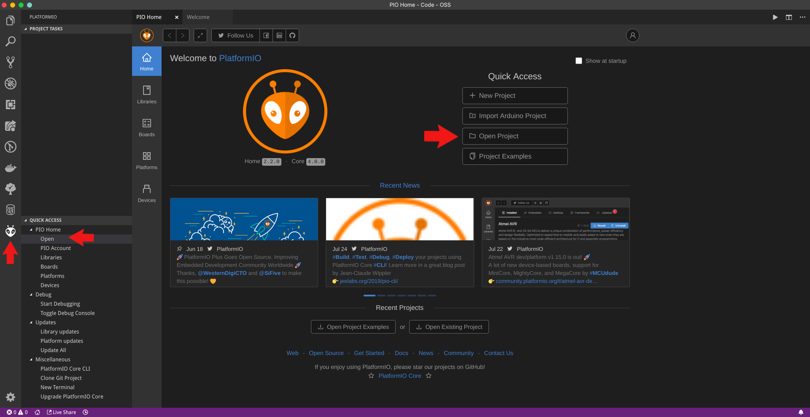

ESP32 Setup
This guide will show you how to program the Matrix Voice's ESP32 with Visual Studio Code using PlatformIO, an open source ecosystem for IoT development.

Step 1: Raspberry Pi Setup
Run the following commands inside your Raspberry Pi terminal to install the MATRIX Voice Software. This will keep the FPGA firmware updated and install a few tools to flash the ESP-WROOM-32.
Add the MATRIX repository and key.
curl https://apt.matrix.one/doc/apt-key.gpg | sudo apt-key add - echo "deb https://apt.matrix.one/raspbian $(lsb_release -sc) main" | sudo tee /etc/apt/sources.list.d/matrixlabs.list
Update your repository and packages.
sudo apt-get update sudo apt-get upgrade
Install the MATRIX init package.
sudo apt install matrixio-creator-init
Reboot your Raspberry Pi.
sudo reboot
SSH back into your Raspberry Pi and enable the ESP32 communications.
sudo voice_esp32_enable
Reset the ESP32 flash memory.
esptool.py --chip esp32 --port /dev/ttyS0 --baud 115200 --before default_reset --after hard_reset erase_flash
Step 2: Personal Computer Setup
Here we're installing the requirements needed to allow your PC to develop and compile ESP32 projects.
- Git : Version control tool.
- Visual Studio Code : Powerful text editor.
- PlatformIO : Development ecosystem with Espressif IDF preinstalled.
- Add PlatformIO to your PATH.
Once you have completed the above items, run the following command to clone the PlatformIO project.
git clone https://github.com/matrix-io/esp32-platformio
Step 3: Configure OTA (Over The Air) Deployment
Open Visual Studio Code and open the PlatformIO home hub.

Click on Open Project and select the esp32-platformio folder.

Once inside the esp32-platformio folder open platformio.ini.
The example code in the initial src/main.cpp file uses OTA updates to easily redeploy code to the ESP32.
To enable OTA updates, make sure to change the SSID_GOES_HERE and PASSWORD_GOES_HERE to your actual WiFi SSID and password.

For Windows Users
If you are using Windows, replace the upload_port parameter inside platformio.ini with the IP of your MATRIX VOICE ESP32.
For example, if your IP is 192.168.1.1 then change
upload_port = 'MVESP.local'
upload_port = 192.168.1.1
Step 4: Initial Build and Deploy
To compile the code, click on the button with the check mark on the bottom left corner of Visual Studio Code. This will build and compile the code to .pio/build/lolin32/firmware.bin in the esp32-platformio directory.
Alternatively you can use the pio run command while in the esp32-platformio directory.

To deploy the compiled firmware run the commands below. Replace YOUR_PI_IP_HERE with the IP of your Raspberry Pi. If you are running Windows please use Git Bash as your terminal for the following commands.
cd esp32-platformio/ota
./install.sh YOUR_PI_IP_HERE
Step 5: Deploying After Initial Upload
After the initial upload, all successive uploads can be done through OTA or through the install.sh script above.
To upload using OTA, open a terminal, go into the project directory, and run this command.
pio run --target upload
Finishing Up

Your MATRIX Voice ESP32 should now be running the deployed example shown above. With the program properly flashed in the ESP32, the Voice can now run without the Pi if you choose to do so. Ensure the MATRIX Voice and Pi are not powered before connecting or disconnecting.
The deployed code can be found in the src/main.cpp file inside the esp32-platformio directory.
More examples can be found here.
Helpful Information
Updating PlatformIO Libraries
To update PlatformIO and PlatformIO libraries run the following commands.
pio update pio lib update
Connecting to the ESP32 UART from Raspberry Pi
To read the serial output from the ESP32 using minicom the MATRIX VOICE ESP32 must be connected to the Pi.
First install minicom on your Raspberry Pi.
sudo apt install minicom
Then to connect and read from serial run the following command.
sudo minicom -D /dev/ttyS0
To close minicom press Ctrl+A then X.
Troubleshooting
If the pio run --target upload command does not work please check the MVID parameter inside platformio.ini, it should have a maximum length of 8 characters.
If pio run --target upload still does not work try running the below command instead, replacing 'MVESP.local' with the data from the upload_port parameter inside platformio.ini.
~/.platformio/packages/framework-arduinoespressif32/tools/espota.py --port=3232 --auth=voice --debug --progress -i 'MVESP.local' -f .pio/build/esp32dev/firmware.bin
If you encounter issues with building try removing build files, reinstalling libraries, and rebuilding project with the following commands.
pio run -t clean && rm -r .pio
pio run